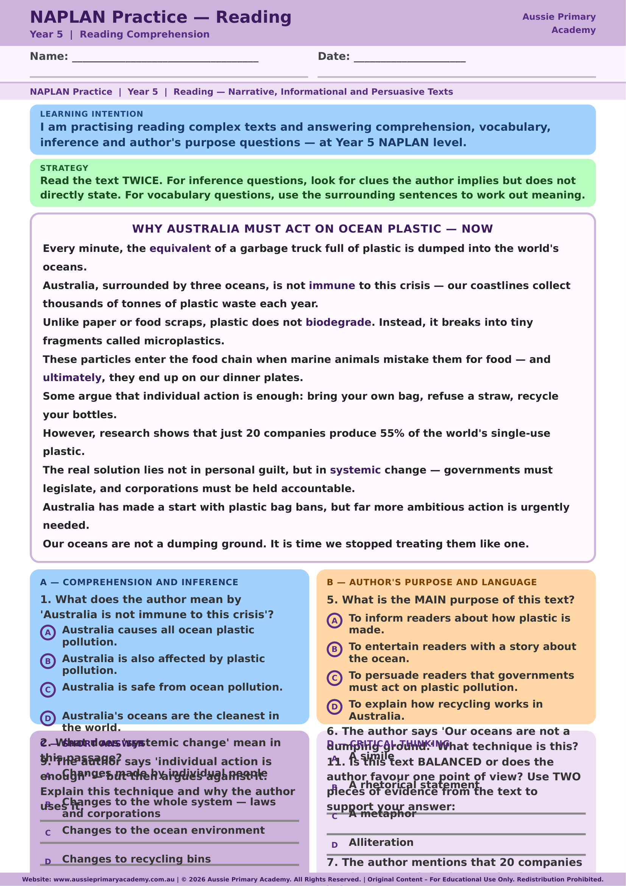

Year 5 · English · NAPLAN-style Practice · Free Printable
NAPLAN Practice — Reading
Practise reading comprehension, vocabulary, inference and author’s purpose with a persuasive ocean-plastic text written at Year 5 NAPLAN-style level.
Worksheet Preview

Preview of page 1 · Full worksheet in the PDF
Quick Facts
- Primary learning: English · NAPLAN-style practice
- Year level: Year 5
- Format: Free printable PDF
- Best for: Classroom practice, tutoring, homework, homeschool
About this worksheet
Students read an informational/persuasive passage about ocean plastic and answer multiple-choice and short-response questions covering comprehension, inference, vocabulary, author’s purpose and critical thinking.
The text models argument structure and evidence — useful for both reading and persuasive writing units.
This is independent practice material inspired by NAPLAN-style question types. It is not an official NAPLAN test and is not endorsed by ACARA or education authorities.
Learning Intention
Students will read a complex Year 5 text and answer comprehension, vocabulary, inference and author’s purpose questions.
Curriculum / purpose
Supports Year 5 english skills through NAPLAN-style practice items. Useful general preparation for literacy/numeracy assessment formats without claiming official test status.
Skills Practised
- Literal comprehension
- Inference
- Vocabulary in context
- Author’s purpose and techniques
- Critical evaluation of viewpoint
Teacher / Parent Notes
Use as timed practice or guided reading. Discuss the difference between individual action and systemic change after completing the questions.